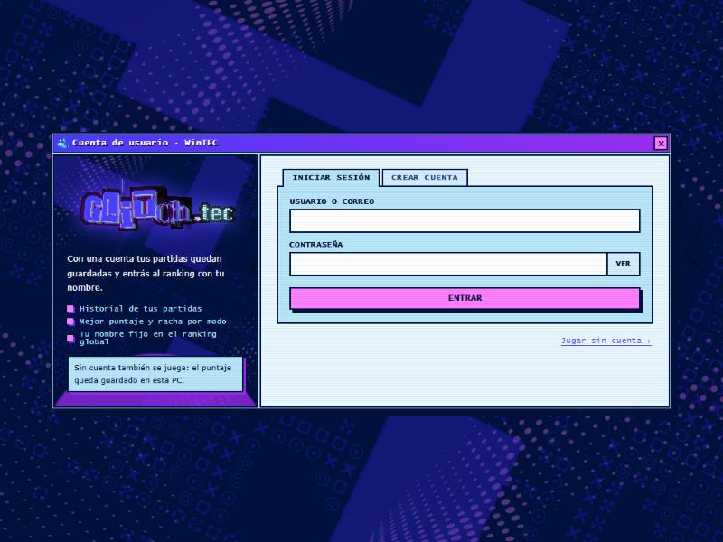
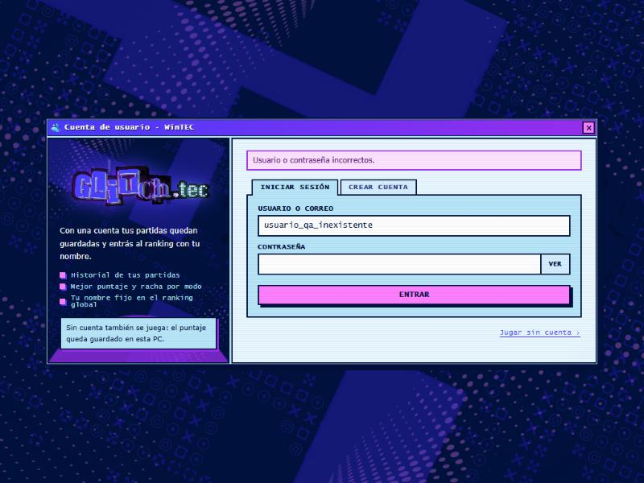

glitchtec.dpdns.org · API PHP 8.3 + Supabase (Postgres)Se verificó que la base en Supabase está activa y se probó el inicio de sesión por API y desde la interfaz del juego. El login rechaza correctamente todos los casos inválidos probados, sin filtrar información ni romperse ante entradas hostiles. El ingreso exitoso se probó con una cuenta de prueba que corrió el propio equipo: funciona, con cookie segura y sin exponer el hash. La sesión se abre y se cierra bien. El bloqueo tras 5 intentos fallidos también funciona.
ping.phpGET /api/ping.php → 200, "db":true, "cuentas":true: la API alcanza la base y la tabla de usuarios responde.

POST /api/login.php)| # | Caso | Esperado | Obtenido | Estado |
|---|---|---|---|---|
| T1 | GET en vez de POST | 405 | 405 «Método no permitido» | OK |
| T2 | Usuario y clave vacíos | 422 | 422 «Completá el usuario y la contraseña» | OK |
| T3 | JSON mal formado | Error controlado | 422 (sin error 500) | OK |
| T4 | Usuario inexistente | 401 genérico | 401 «Usuario o contraseña incorrectos» | OK |
| T5 | Correo inexistente | Mismo mensaje que T4 | 401, mismo texto | OK |
| T6 | Inyección SQL en el campo login | Rechazo | 401 (consulta preparada) | OK |
| T7 | Contraseña de 5000 caracteres | Rechazo sin calcular hash | 401 | OK |
| T8 | Login de 200 caracteres | Rechazo | 401 | OK |
| T9 | Consultar sesión sin login | Sin usuario | 200 {"user":null} | OK |
| T10 | OPTIONS (CORS) | 200 | 200, origen limitado a glitchtec.dpdns.org | OK |
| T11 | Login correcto con cuenta de prueba (≈1,6 s) | 200, cookie HttpOnly + Secure + SameSite, sin hash | 200; las tres banderas presentes; sin password_hash; también entra con el usuario en mayúsculas; clave incorrecta → 401 | OK |
| T11b | Sesión visible justo después del login (script) | user con datos | La primera corrida dio user:null por un error del script (mandaba la cookie vieja). Corregido, la sesión queda activa y se cierra con el logout | OK |
| T12 | Bloqueo tras intentos fallidos | 429 tras 5 fallos (5 min) | Intentos 1–5 → 401; intentos 6 y 7 → 429 «Demasiados intentos fallidos» | OK |
Las 12 pruebas pasan. Un detalle a considerar: al bloquearse, la API responde 429 solo para cuentas que existen (las inexistentes siguen dando 401), lo que permite saber si un usuario existe tras 5 intentos. Es un riesgo bajo y habitual; se evita contando también los fallos de usuarios inexistentes por IP. La cuenta de prueba quedó bloqueada 5 minutos por esta prueba.
T1–T10 con credenciales inexistentes; T11 lo ejecutó el equipo con una cuenta de prueba; T12 usó claves inventadas sobre esa cuenta. No se crearon cuentas.